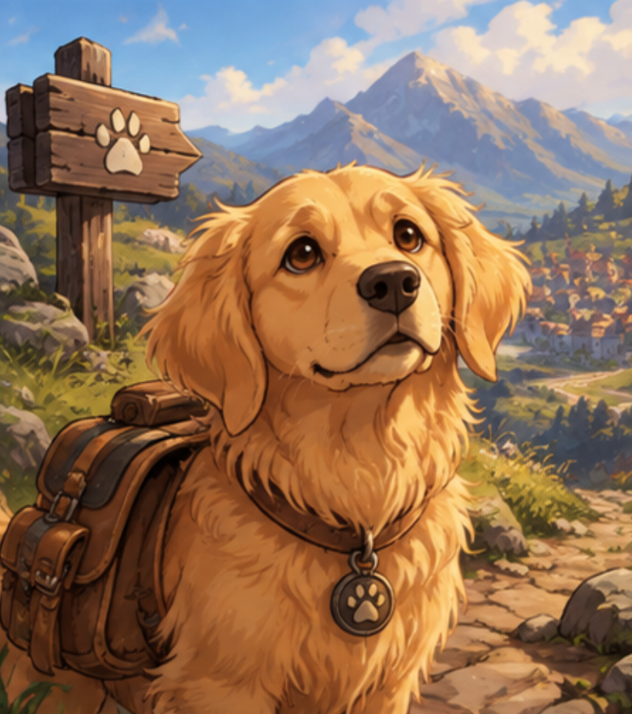
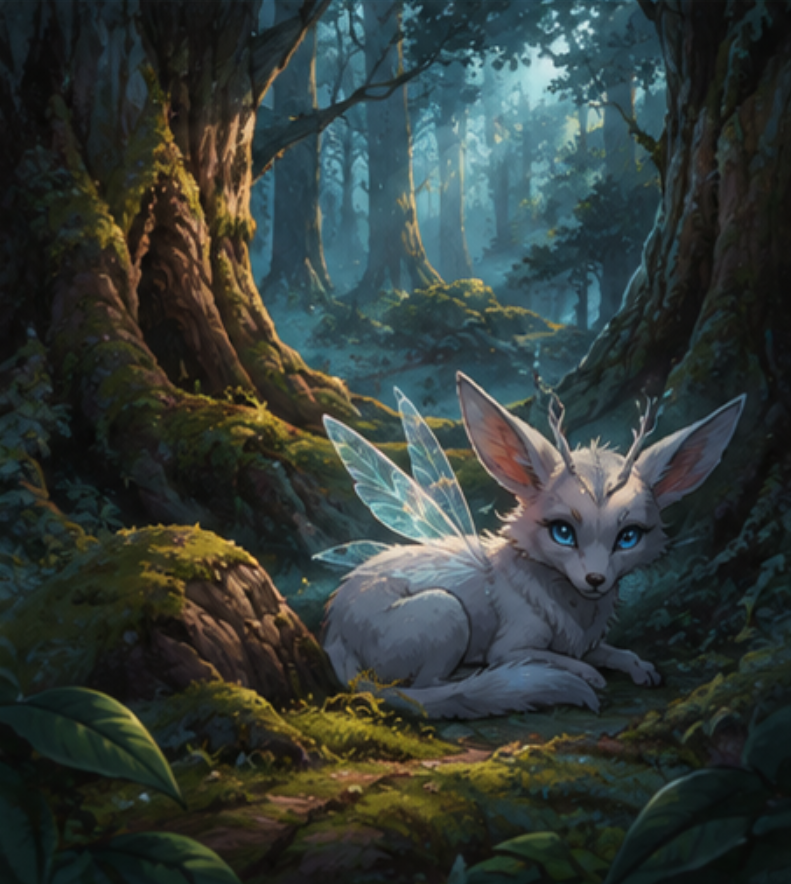
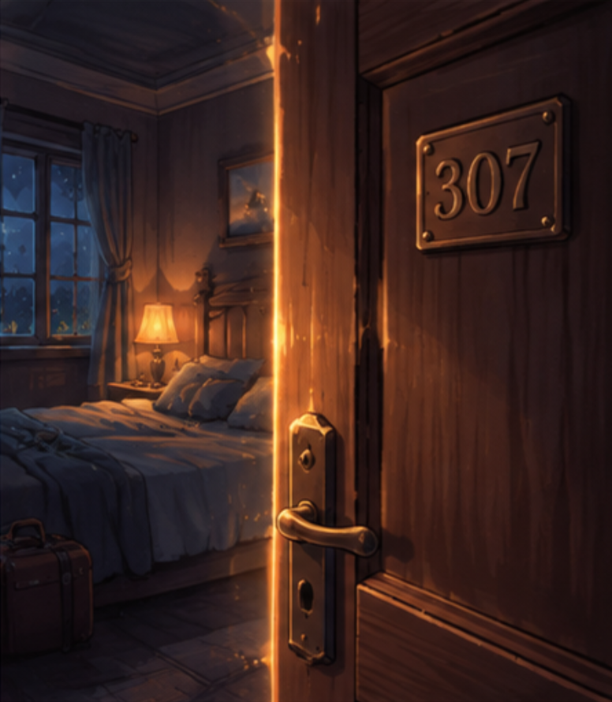
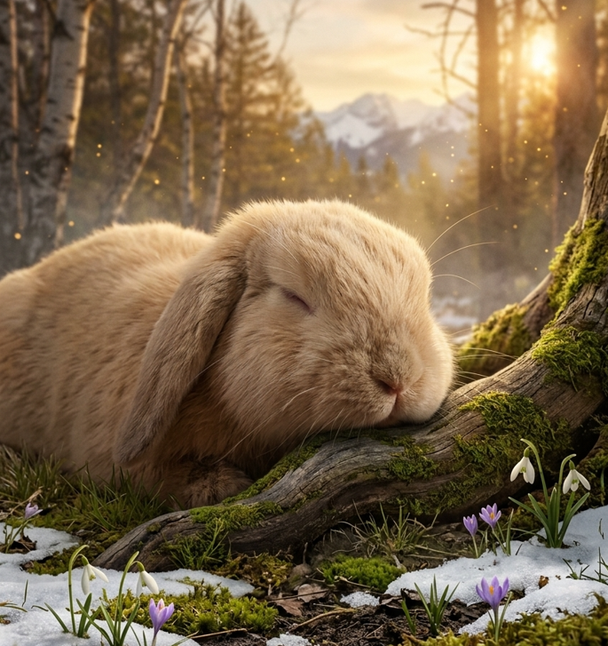
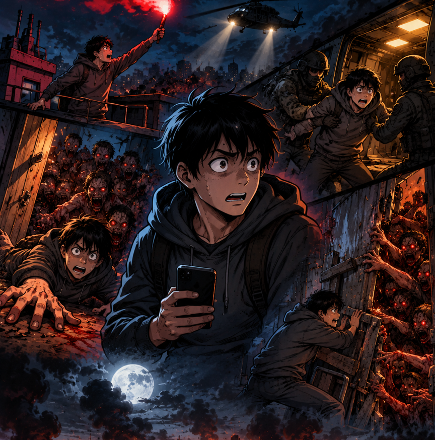
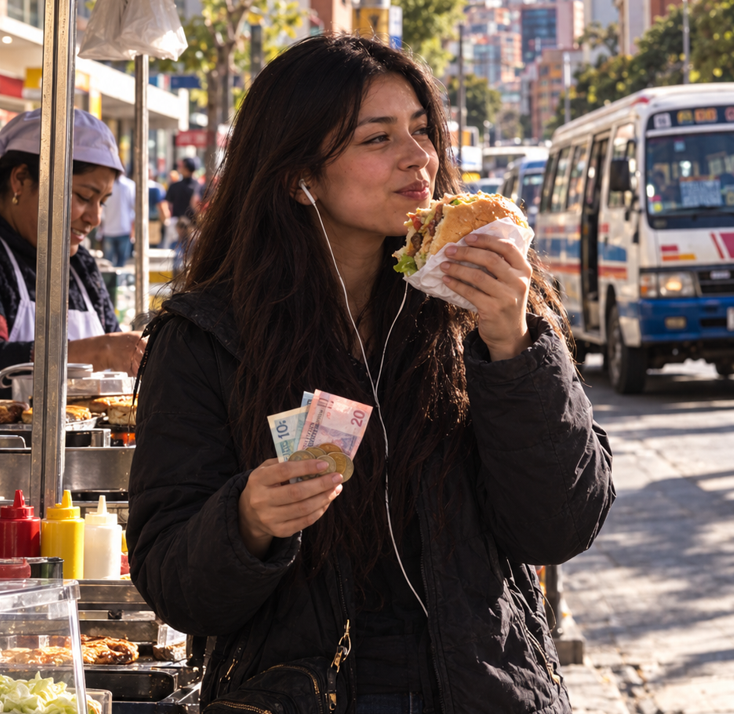

“Nunca conoceremos todas las historias que pudieron ser. Solo podemos continuar aquella que elegimos vivir.”
"Cada paso parece casualidad hasta que miramos hacia atrás."
"Incluso en la oscuridad más profunda, una sola chispa de valentía puede encender un nuevo camino."
"Nuestras vidas se definen por las oportunidades, incluso por las que perdemos."
"A menudo encontramos nuestro destino por los caminos que tomamos para evitarlo".
"Entre el camino que elegimos y el tiempo que nos queda, sucede la vida."
"El final de un capítulo es tan solo el comienzo de otra página por escribir."
"No es en las comodidades donde se prueba la fuerza de un alma, sino en el momento del peligro y la decisión."
Más que una editorial, somos custodios de mundos que responden a tu voz. Sumérgete en páginas que se niegan a permanecer estáticas, donde tus elecciones iluminan la oscuridad de los momentos críticos. Aquí no hay finales inevitables, cada paso que das altera el hilo del tiempo y da forma al camino.
Explorar Historias"Lo inevitable dura hasta que alguien decide cambiarlo."
"El tiempo nos lleva por caminos que solo nuestras decisiones pueden cambiar."
"Los caminos más difíciles suelen llevarnos a los destinos más maravillosos."
"El futuro nos tortura y el pasado nos encadena, por eso nos escapamos del presente, ávidos de un destino que solo nuestras elecciones pueden forjar."
"A veces el miedo no está en equivocarnos, sino en descubrir qué habría pasado si elegíamos distinto."
"No todas las decisiones llegan con certeza. Algunas llegan con coraje."
"La valentía no es la ausencia de miedo, sino el juicio de que algo es más importante que el miedo."
"El coraje no siempre ruge; a veces es la voz tranquila al final del día que dice: 'mañana lo intentaré de nuevo'."

Un día tranquilo en casa se convierte en una aventura extraordinaria. Acompaña a la valiente perrita Nami a través de caminos ocultos y guardianes dormilones. Cada decisión que tomes guiará sus huellas en este sendero. ¿La ayudarás a encontrar el camino correcto?
Comenzar Aventura
Todos en Latveria temen entrar al Bosque de Varnok. Acompaña a Ayla a descubrir la verdad sobre sus criaturas mágicas y toma las decisiones correctas para proteger el Corazón de Aether antes de que su luz se apague para siempre.
Adentrarse en el bosque
Una rutinaria madrugada de trabajo solitario se quiebra al recibir un inquietante mensaje anónimo y una fotografía imposible de ti mismo. Atrapado en tu propio departamento, deberás enfrentarte a una anomalía que se alimenta del pánico. Cada decisión alterará la realidad. ¿Lograrás sobrevivir a la noche o abrirás la puerta equivocada?
Comenzar Pesadilla
Derek siempre prefirió la tranquilidad de la rutina, llevando una vida sin demasiadas responsabilidades. Todo cambia cuando Shiro, un pequeño conejo, aparece inesperadamente en su vida. A partir de entonces, deberá adaptarse a nuevas responsabilidades y descubrir que algunas compañías llegan sin ser planeadas, pero pueden dejar una huella importante.
Dar el Primer Paso
En plena madrugada, una misteriosa infección desata el caos en la ciudad y convierte a sus habitantes en una amenaza. Atrapado en tu departamento, tendrás que tomar decisiones rápidas para escapar y encontrar una ruta segura. Cada elección puede acercarte al rescate o llevarte a un destino fatal. ¿Lograrás sobrevivir hasta que llegue el rescate?
Enfrentar la infección
Sobrevivir a la universidad es fácil; el verdadero reto es pagar 3 bolivianos con un billete de 100 en el minibús 834. Acompaña a Alía en esta odisea urbana. ¿Fingirás dormir o enfrentarás la furia del chofer? Elige tu camino y ayúdala a llegar a casa con su orgullo y su cambio intactos.
Subirse al Minibús